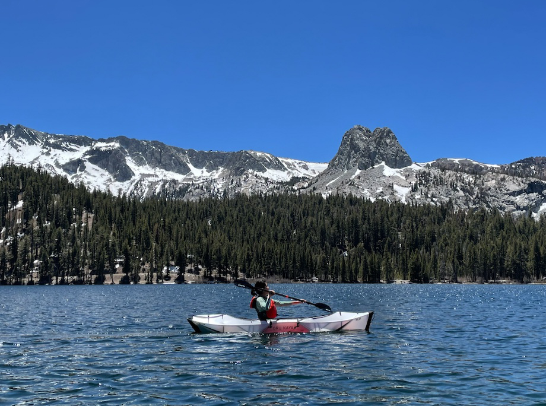
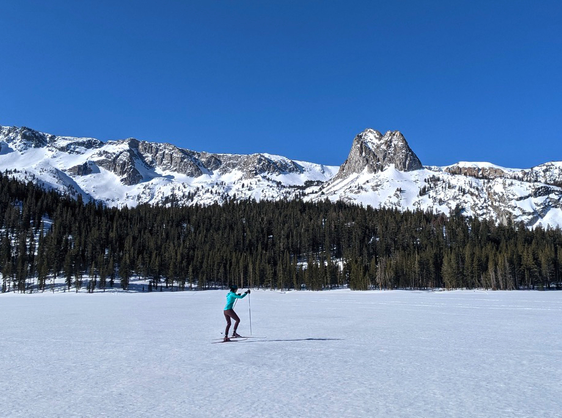
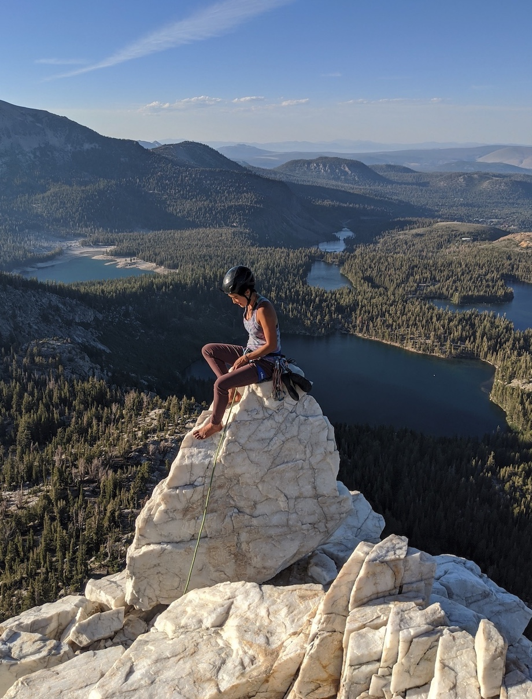
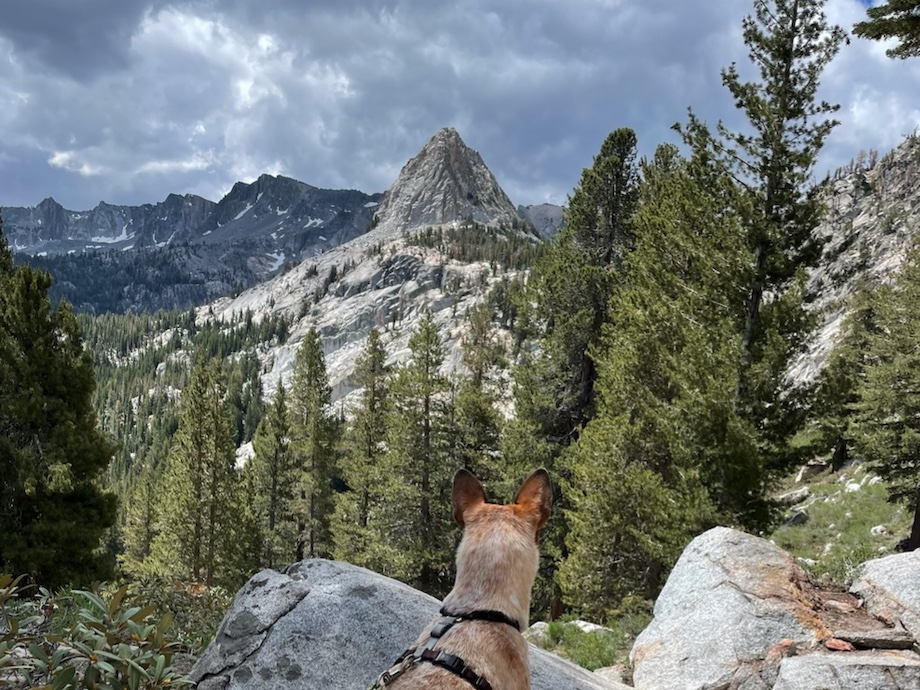
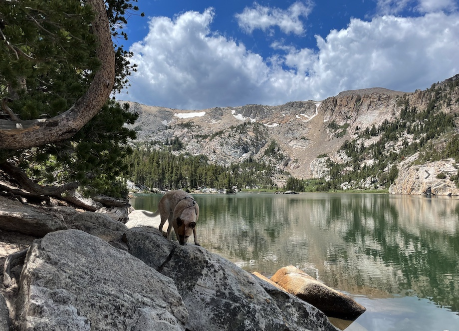
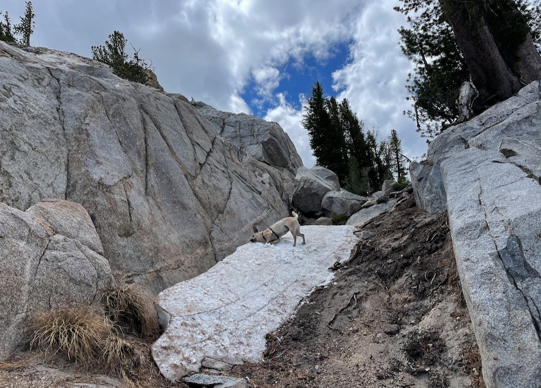
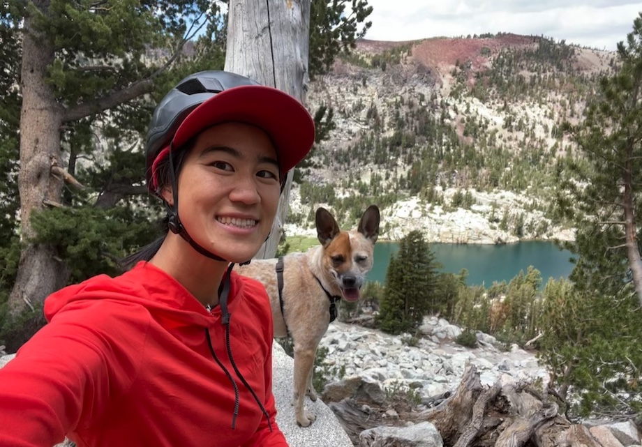
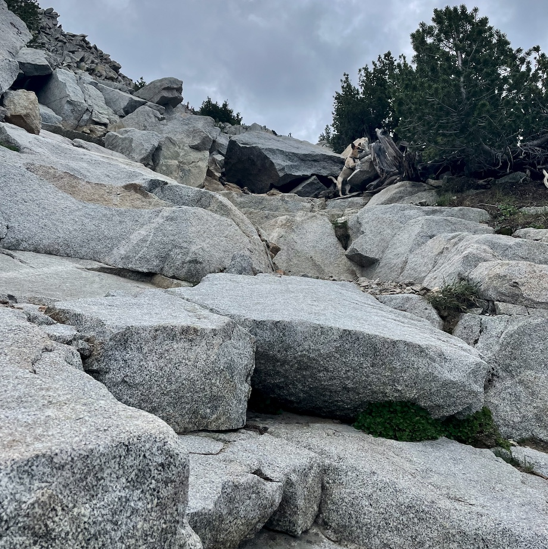
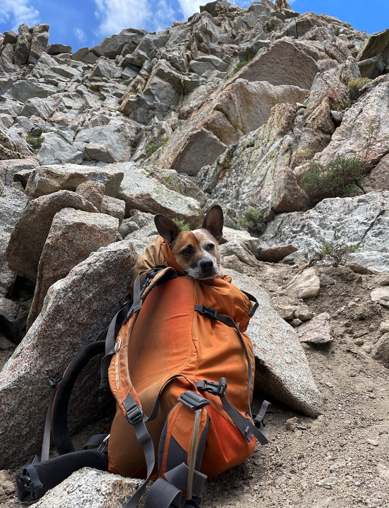

Crystal Crag is tough for dogs


My human friends love to climb Crystal Crag (10,383ft) after work, and it’s such an iconic feature of the Lakes Basin. So it was just a matter of time before I made a summit attempt myself! The easiest way up is the descent trail of the climb, but class 3 below the summit proved too tough for a dog with no thumb-grabbers and I turned around 100 feet from the top.

- trailhead: Lake George
- route: West face, class 3
- distance: 4.5 mi (7.3 km)
- elevation gain: 1640 ft (500 m)
- moving time: 3hr 10min (1hr to base, 40min climbing up, 40min climbing down, 50min to car)
- tough for dogs?: yes 😔
Crystal Crag west face scramble attempt to 10,280ft. Download gpx.
The hike starts on the Crystal Lake trail from Lake George. It’s very popular with dogs and humans so parking can be tricky on summer weekdays, tough on summer weekends, and impossible on holiday weekends (plan accordingly).

After 35 minutes of switchbacks, I jumped in to Crystal Lake to cool off!

After Crystal Lake, you go left onto some use trails. Climbers keep going left to the base of North Arete (5.6/5.8), but dingos cut across right over a bit of talus to the base of the west side of the peak, which is the descent for the climb.

Some parts of the west face can be loose, and sometimes there’s a LOT of climbers coming down, so a helmet is not a bad idea.

I needed some spotting to get off the ground, but then there was some dingo-friendly terrain.

We managed to get to the saddle before it got rough for dogs. Going up from the saddle became class 3 real fast. This is where I stopped, just 100ft under the summit:
{kind=link}
Descending proved to be a trial. It can be spooky going down face-first, so I was hesitant at times. It was getting stressful for everyone involved so for the first time I got put into the backpack (as rehersed at home) to enjoy the ride for the trickiest bits of descent.

We made it to the ground safely! and the clouds cleared up as we strolled back to the car. Will I ever learn to climb class 3? Will I grow thumbs and be allowed into Yosemite? Tune in next time.
comments
No comments at the moment. Hey, you could write one \o/